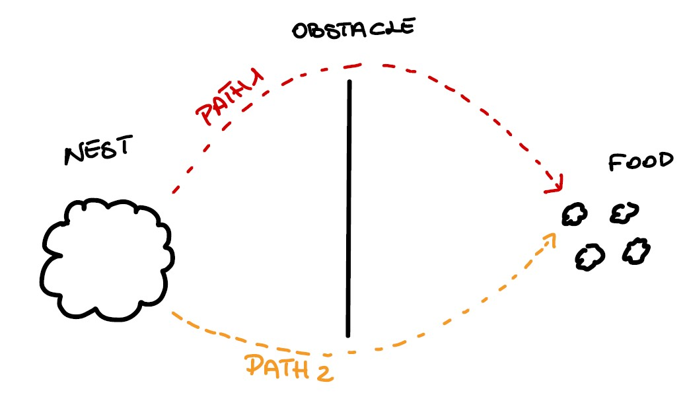

Ant Colony Optimization algorithm
Have you ever wondered why the ants always take the shortest path to the food source?
If yes, unfortunately, you are not the first. The first paper about Ant Colony was
written in 1996 by an italian researcher and it is called Ant System.
They discovered that they do like that because they lay a trail for a while, called
pheromone, that is recognized by the other ants.
Now you may think: and so?
Well, let's consider that we have an ant colony inside the nest, a food source far
away and an obstacle among these two spots.

Now imagine that the ants are hungry, so they decide to go out in order to get
something to eat. They will split in two (or more) groups, the first one follows
the first path, and the second one follows the second path. After a while, other ants
decide to go out from the nest. Where will they go? Well, where do you think there will
be a stronger flavour of pheromone? So, the second path will be more and more popular,
until the first one will not be considered anymore!
Actually, what I described so far, is just a general idea. In order to be more precise we should
quantify timestamps, distances, pheromone's intensity and so on. We will try to point this out in a minute.
Anyway, you are probably wondering where it can be helpful. This idea has been used for solving the famous
traveling salesman problem (TSP), that is defined as follows :
"given a list of cities and the distances among them, what is the shortest path that
visits each city exactly once and comes back to the first one?" .
Now we can try to formally describe the problem, by considering three ant features:
The ants choose the town to move with a given probability.
We must avoid subtour.
When an ant completes the tour ($n$ towns are visited without subtours) it lays a trial on each edge $(i,j)$ of that tour.
Let us consider :
$n$ towns
$d_{ij}$ is the length of the path among the towns $i$ and $j$.
$b_i(t) [i = 1, … ,n]$ the number of ants in town $i$ at time $t$
$m = \sum_{i=1}^{n} b_i(t)$ the total numbers of ants
$\tau_{i,j} (t)$ is the intensiy of the pheromone on edge $(i,j)$ at time $t$
The ants move from a city to the next one in the interval $(t,t+1)$,
so after $n$ iterations the pheromone will be equal to the initial pheromone times an “evaporation” parameter,
plus the variation of the pheromone. Translated in symbols : $ \tau_{i,j} = \rho \tau_{i,j} + \Delta \tau_{i,j}$
Where $0 < \rho < 1$ and the new pheromone $\Delta \tau_{i,j}$ is equal to the sum of the pheromones of each ant $k$ :
$\Delta \tau_{i,j} = \sum_{k=1}^{m} \Delta \tau_{i,j}^k$.
$\Delta \tau_{i,j}^k$ depends on the distance, in fact is defined as $\frac Q {L_k}$, if an ant $k$ uses the edge $(i,j)$ and $0$ otherwise.
$Q$ is just a scalar, and $L_k$ is the distance.
In order to avoid subtours we use a tabu list for each ant (tabu_k), that collect the towns already visited.
This structure is used for avoiding subtours, it means that each ant won’t visit the same town twice. Finally we define
the visibility $\eta$ as $\frac 1 {d_ij}$. Now we have everithing we need for defining the transition probability from town $i$ to town $j$ for the
$k^th$ ant:
$ p_{ij}^k (t) = \begin{cases} \frac { [\tau_{ij}(t)^\alpha] [\eta_{ij}]^\beta} {\sum_{k} [\tau_{ik}(t)^\alpha] [\eta_{ik}]^\beta}, & j \in allowed_k\\ 0, & otherwise \end{cases} $
where $allowed_k = {N - tabu_k}$ and $\alpha$, $\beta$ are parameters that control the relative importance of trail versus visibility.
That's it! If you are still reading probably you are curious to know how the algorithm works, so I'll accomodate you, let's go.
It is a bit trick and I try to be as short as I can. As the author suggets, we can split it into 6 parts.
We place the $m$ ants on the nodes and we initialize the time counter $t$, the cycles counter $NC$ and we initialize $\tau_{ij}=c$ for each edg. Finally we set $\Delta \tau_{ij} = 0$
Set $s=1$, it will be the index for the tabu list. Then we initialize each tabu list with the initial town
Increment $s$ by 1 until the tabu list is full and for each ant choose the town to move on, by the probability $ p_{ij}^k (t) $, move them and update the tabu list with the chosen town
For each ant $k$, move it from $tabu_k(n)$ to $tabu_k(1)$, compute the length $L_k$ and update the shortest tour. Then, for every edge $(i,j)$ and for each ant $k$ update $\Delta \tau_{ij}$
For every edge $(i,j)$ compute $\tau_{ij}(t+n)$. Then, set $t=t+n$ and $NC = NC +1$ and finally set $\Delta \tau_{ij}(t) = 0$ for every edge
If $NC < NC_{max}$ and if it has not a stagnation behaviour, empty the tabu list and go to step 2, otherwise print the shortest tour and finish
The complexity for positioning the ants is $O(n^2 + m)$, then we scan the ants $O(m)$, after that we scan each edge for each ant $O(m n^2)$ and the same for the fourth step.
Then, again we scan each edge ($O(n^2)$) and finally we have a complexity of $O(m n)$ because we have $m$ tabu list with length $n$.
The total complexity it will be equal to $O(NC mn^2)$. So it might be quite expansive, but if we consider that the TSP problem is an NP-Hard problem, we can consider it
as a really nice solution. Thanks for reading and if you want to know more about I highly recommend the original paper "The Ant System:
Optimization by a colony of cooperating agents" of Marco Dorigo, Vittorio Maniezzo and Alberto Colorni.